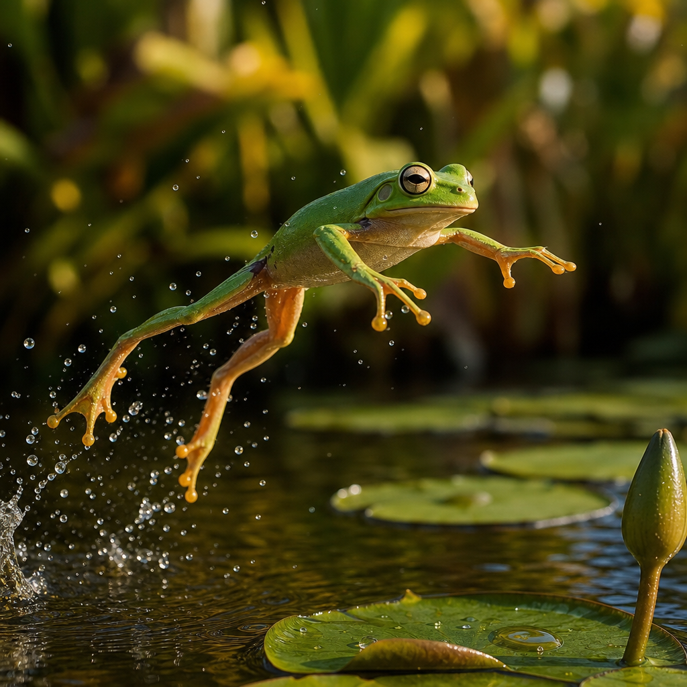
Fabulous Frogs
A Hop into the World of Frogs

A Hop into the World of Frogs
Frogs are amphibians. That means they can live in water and on land! Frogs have been around for a very, very long time -- even longer than dinosaurs.
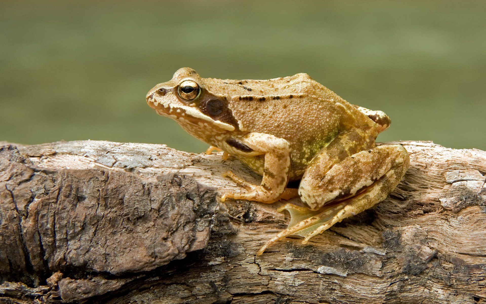
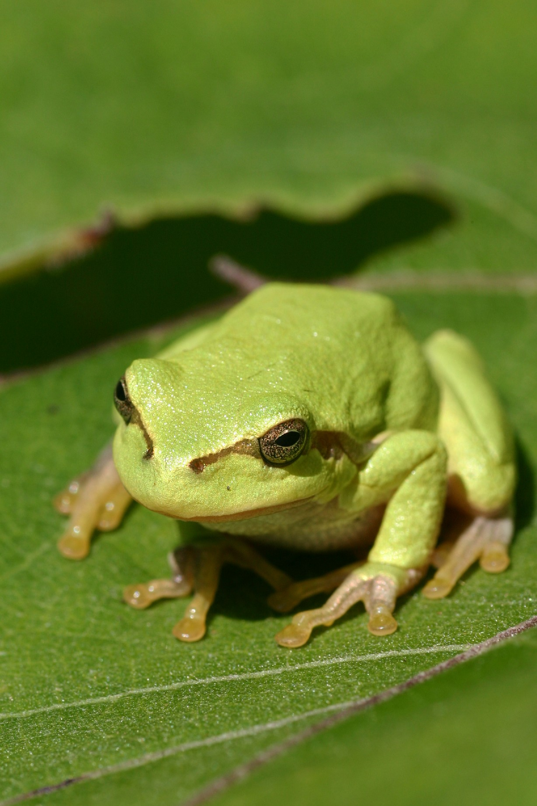
Frogs have smooth, wet skin that helps them breathe. They have big eyes on top of their heads so they can see in almost every direction. And their long, sticky tongue can catch a bug faster than you can blink!
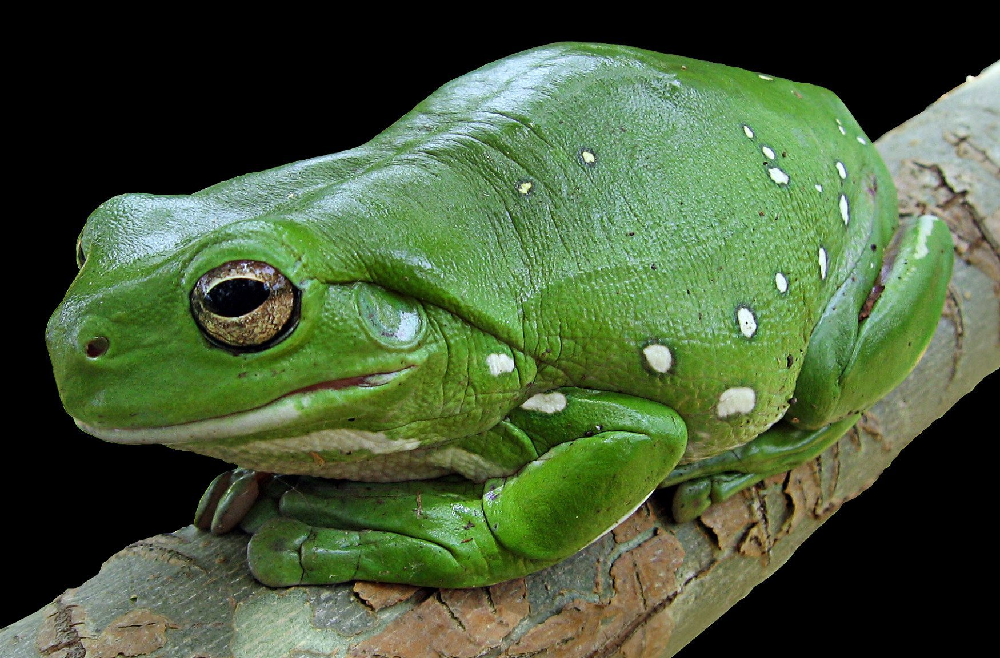
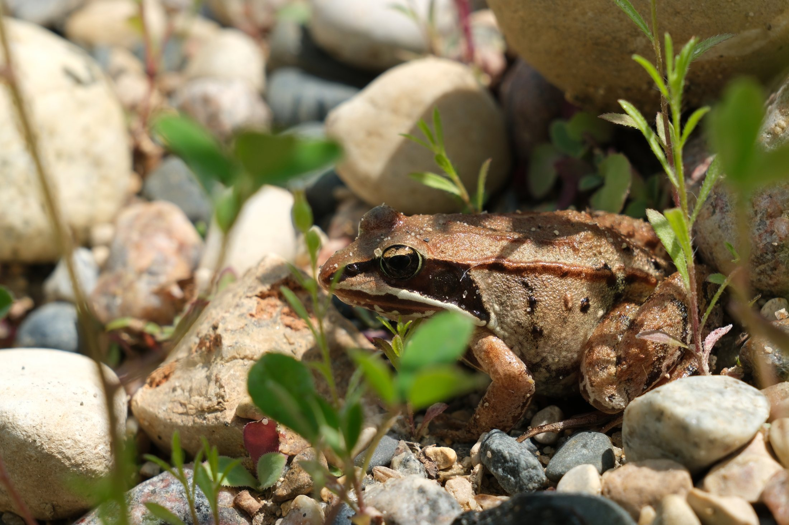
Frogs live all over the world -- except Antarctica! Many frogs live near ponds, rivers, and swamps. Some live high up in rainforest trees and never come down to the ground.
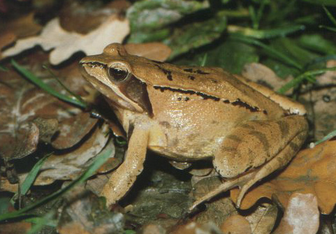
Frogs love to eat bugs! Flies, mosquitoes, and crickets are all yummy frog food. A frog catches its dinner with a long, sticky tongue -- snap! It is so fast you would miss it if you blinked.
Frogs lay their eggs in water. The eggs look like a squishy blob of jelly called frogspawn. Baby frogs are called tadpoles. They have long tails and no legs, and they eat tiny plants in the water.
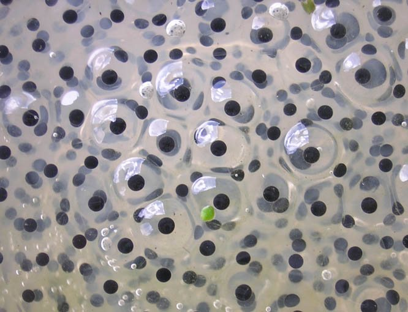
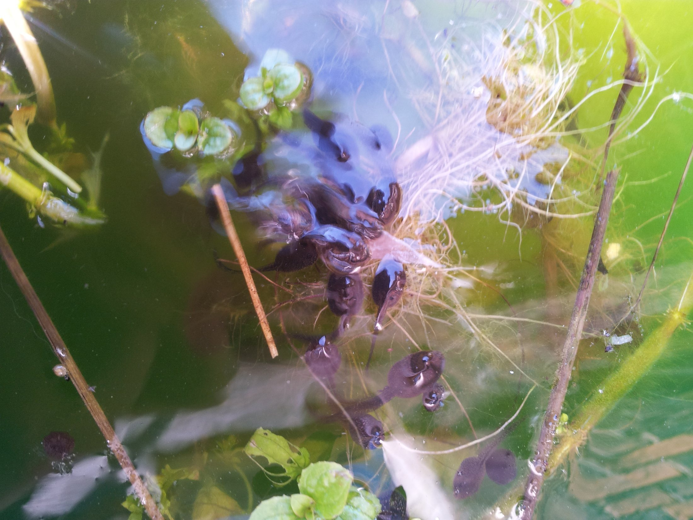
As a tadpole grows, something amazing happens. It sprouts legs! Its tail gets shorter and shorter. Soon it looks just like a frog. This big change is called metamorphosis.
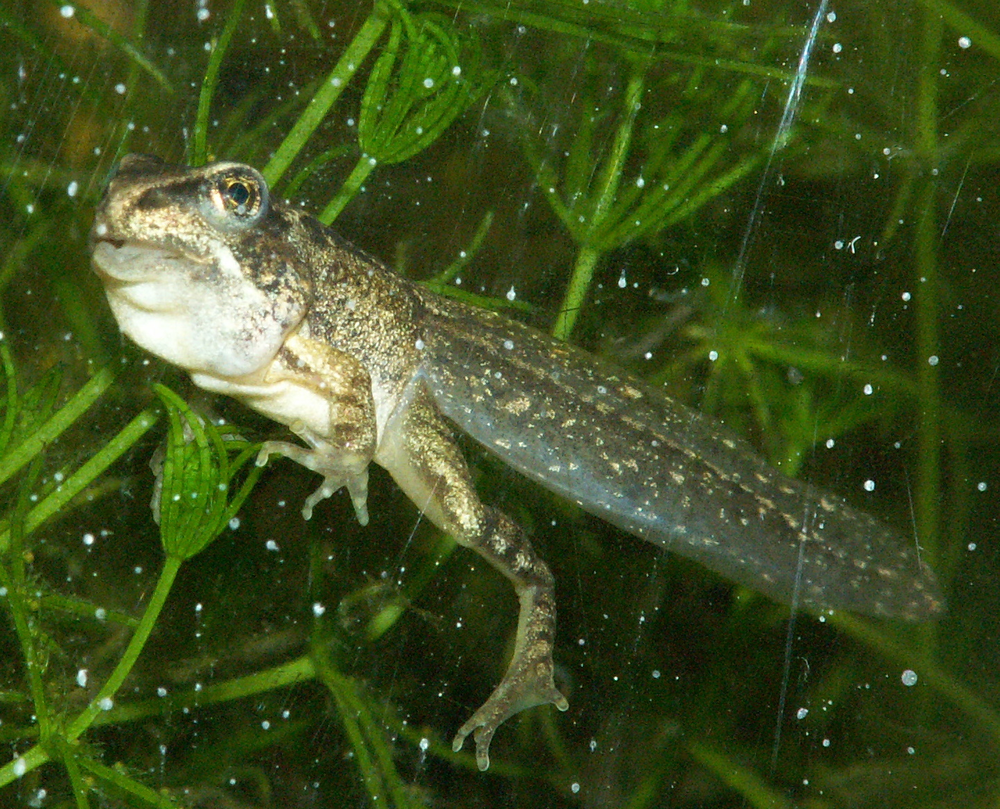
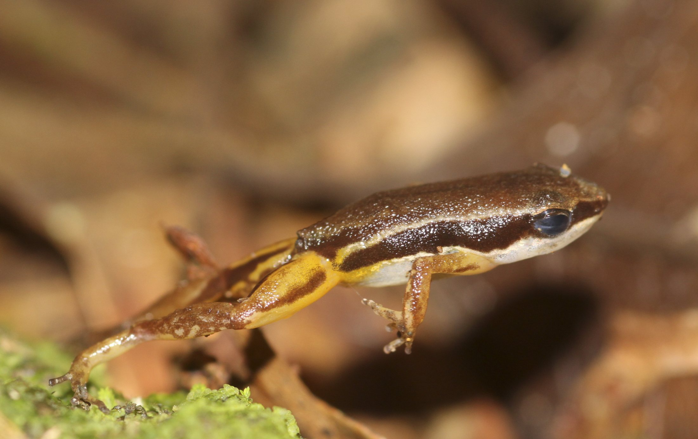
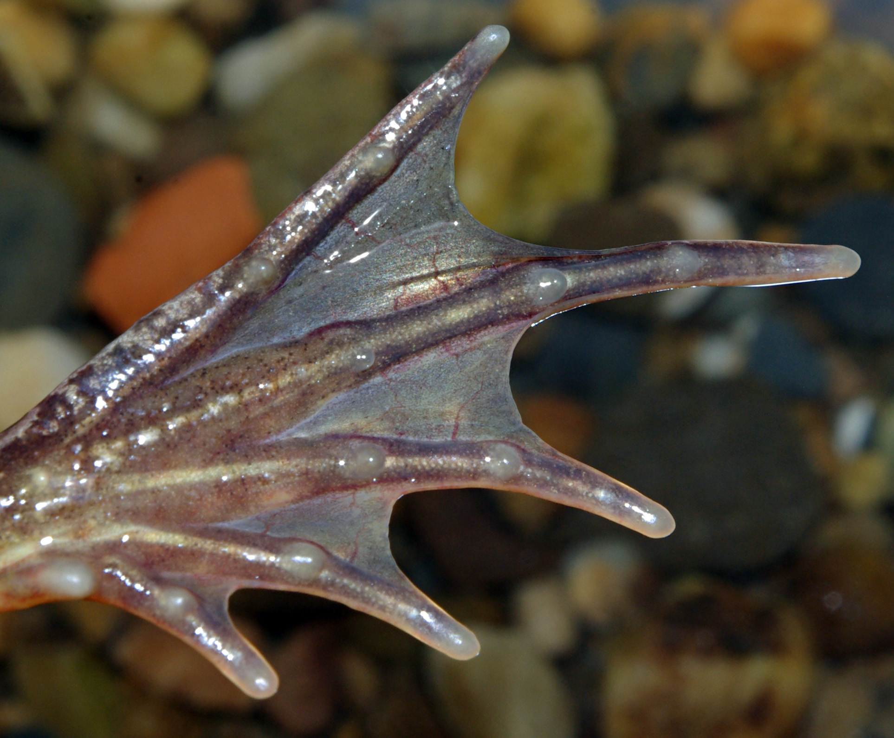
Frogs are amazing jumpers! Their strong back legs help them leap really far. Tree frogs have sticky pads on their toes that work like suction cups to help them climb.
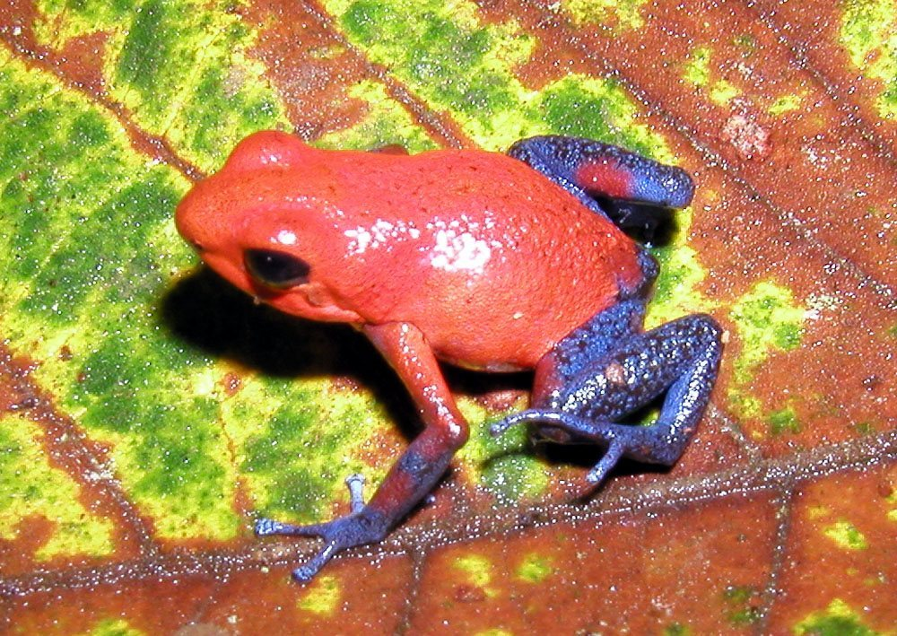
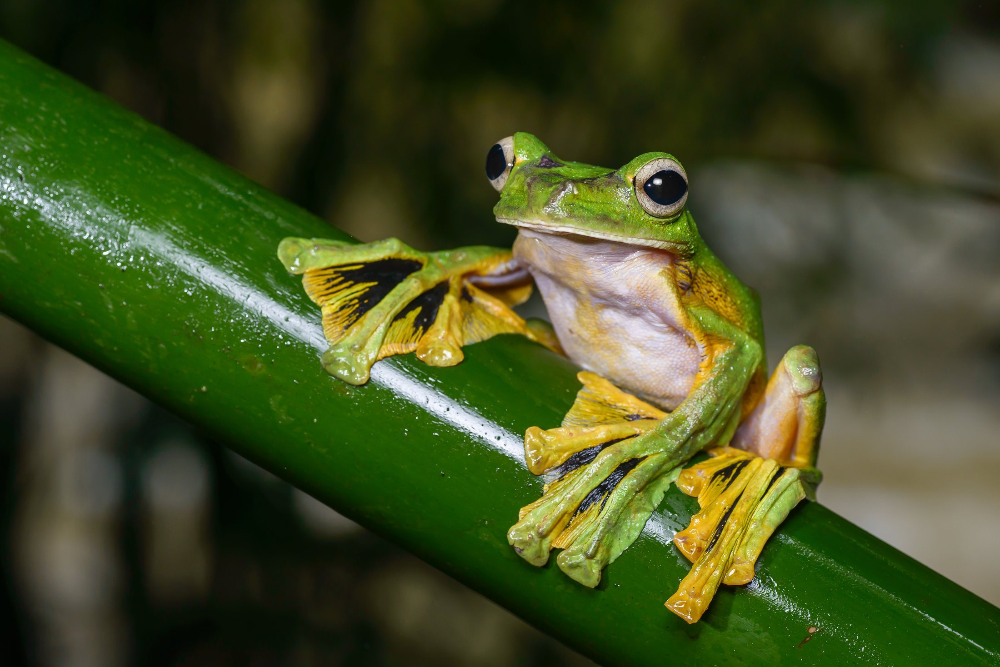
There are so many cool frogs! Poison dart frogs are tiny with bright colors that say "stay away!" Flying frogs spread their big webbed feet and glide from tree to tree.
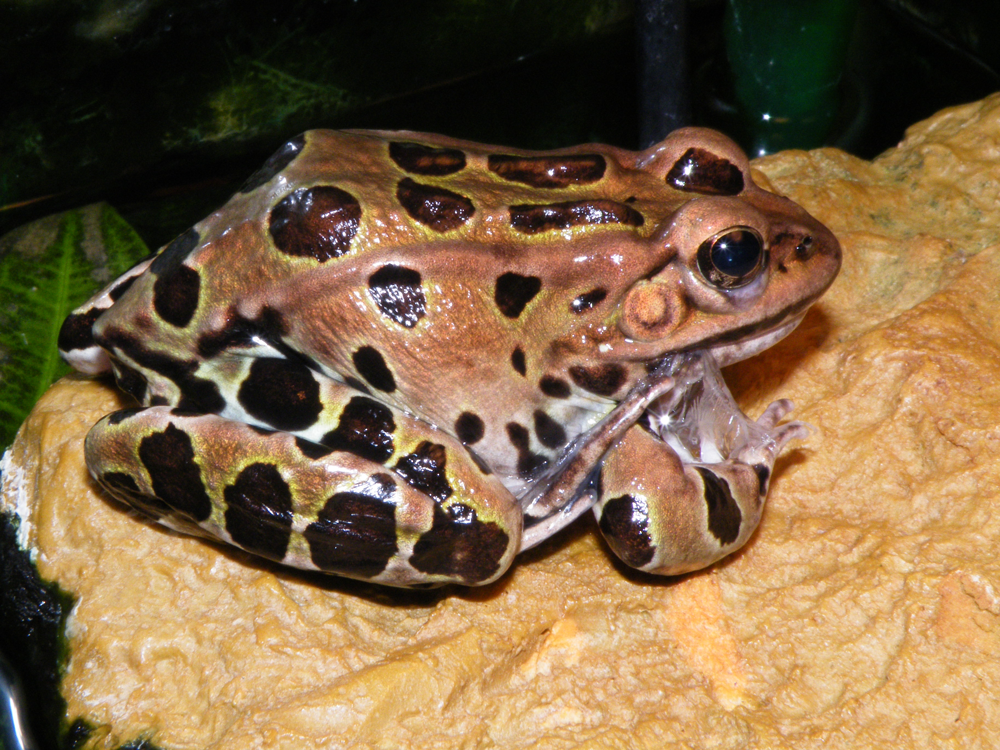
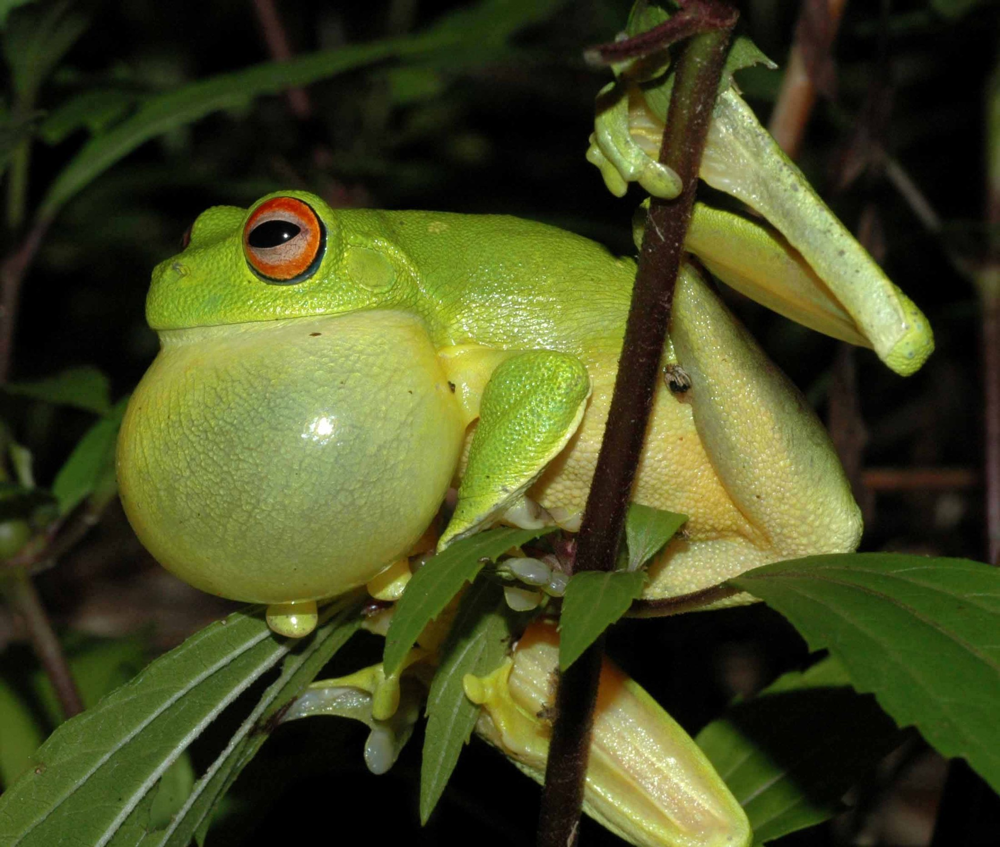
Frogs have clever ways to stay safe. Some blend in with leaves and mud so other animals cannot see them. Frogs sing loud songs to find their friends. Frogs help us too -- they eat lots of pesky mosquitoes!